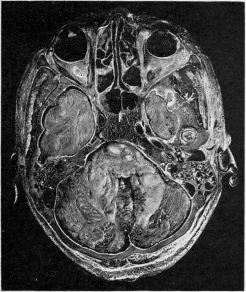

The Ear. Part 3
Description
This section is from the book "Surgical Anatomy", by John A. C. MacEwen. Also available from Amazon: Surgical Anatomy.
The Ear. Part 3
The iter, or aditus, about ¼ inch long, leads from the posterior extremity of the attic of the middle ear to the mastoid antrum. Its roof, like that of the middle ear, is composed of a thin plate of bone, separating it from the dura of the temporo-sphenoidal lobe. Its floor and part of its inner wall are formed of hard compact bone encasing the facial nerve, while the bone encasing the external semicircular canal causes a slight prominence on the inner wall posterior to the facial canal.
The mastoid antrum, situated at the upper anterior angle of the mastoid bone and present from birth, is very constant in its position, but varies greatly in size (sometimes occupying nearly the whole mastoid process), and also in its depth from the surface. Like the middle ear and iter, it is lined with a thin layer of mucous membrane, continued through the Eustachian tube from the pharynx, and it is separated from the temporo-sphenoidal dura by only a very thin layer of bone, the tegmen antri. Anterior to the mastoid antrum lies the descending portion of the facial nerve, enclosed, as it is in other parts, by dense bone. The mastoid antrum is in direct communication, by numerous small canals, with the mastoid cells, with which the mastoid process is honeycombed.^. These mastoid cells freely intercommunicate by similar canals, and they also are lined by mucous membrane continuous with that of the pharynx. It will thus be seen that if organisms gain access to the Eustachian tube, they may travel up to the middle ear, iter, mastoid antrum, and mastoid cells, and as these structures, and particularly the latter, are in close proximity to numerous important parts, and pus cannot readily find an exit from them, life may readily be
threatened. The mastoid antrum, when large, or in other cases the mastoid cells, generally projects backwards, beneath the knee of the sigmoid sinus. The position of the knee of the sinus is unfortunately very variable, being sometimes within ⅜ inch of the posterior osseous wall of the external auditory meatus, and at others fully 1 inch behind it, while it also varies much as to depth from the surface. When the mastoid antrum projects far back behind the sigmoid sinus, it comes into relationship with the dura of the cerebellum, from which it may be separated by only a thin layer of bone.
Fig. 7.-Horizontal head Section, passing through the Middle Ear; (Viewed from Below.)
Fig. 7a. - Horizontal head Section, about 4; Inch Below 7.
Anteriorly are the orbital cavities occupied by the eyes, ocular muscles, ntrves, fat, etc., and the ethmoidal and sphenoidal cells. The lower and anterior extremities of the temporo-sphenoidal lobes of the brain are seen, related anteriorly to the posterior ethmoidal and sphenoidal sinuses and orbits, and posteriorly (on the left) to the mastoid cells. On the right the tip of the condyle of the jaw is seen in section, just external to the temporo-sphenoidal lobe, and in front of the tympanic membrane, which is also cut across and separates the external from the middle ear. In the middle ear are portions of the ossicles, and still more internally is a turn of the cochlea cut across, while behind the middle ear the facial nerve (white) is cut transversely. The mastoid cells and their relationship to the sigmoid sinus are well shown, as is likewise the cerebellum, presenting a portion of the fourth ventricle.
Extension of septic matter upwards from the middle ear, iter, and mastoid antrum, will involve the cerebral dura covering the temporo-sphenoidal lobe, and give rise most probably to extradural, or, if the dura be penetrated, to
intracerebral abscess. The reason why such extension does not cause generalized meningitis is to be found in the resisting qualities of the dura mater. At first toxins alone penetrate the dura, and these set up an inflammation which is local and leads to soldering of dura, pia-arachnoid, and even brain surface. Thus, when organisms do ultimately perforate the dura, they are in a space confined by adhesions, and are not in the free subdural space. Small veins may also carry the infection to the superior petrosal sinus, causing thrombosis. It will be remembered that, owing to the shape of the middle fossa, the pressure of temporo-sphenoidal abscesses is directed inwards, as evidenced by pressure on the third nerve, causing first (during the period of irritation) a contraction, and later (from paralysis) a dilatation of the pupil on the same side, and upwards to the face centre, giving rise to a paralysis of the face on the opposite side, the mimetic play of the features being retained.
Note the seventh and eighth nerves entering the internal ear together and then diverging. On the left the cochlea, the vestibule, the middle ear, iter, and mastoid antrum are shown, as likewise the external semicircular canal (black, to the inside of the antrum), and the sigmoid sinus.
Extension backwards from the mastoid antrum and cells will involve, first, the sigmoid sinus, giving rise to sinus thrombosis, and second, possibly the cerebellum, giving rise to cerebellar abscess. Sigmoid sinus thrombosis will extend down into the internal jugular in the neck, and as the clot becomes purulent and broken down by the action of the organisms, septic emboli may be swept to the lungs (pneumonic type), abdomen (typhoid type), or back to the meninges (meningeal type). As the sigmoid sinus is formed by a splitting of the dura mater, the explanation given above as to the resisting qualities of the dura again holds as the reason why organisms do not immediately penetrate the sinus and enter the circulation. Only toxins penetrate at first. These cause the formation of a thrombus in which there are no organisms, and when, ultimately, organisms do enter the sinus, they encounter a solid mass of clot and not circulating blood. Hence it is not until purulent disintegration of the clot has occurred that systemic infection takes place. Extension inwards from the middle ear to the internal ear : Here the organisms may invade, and then travel along the^sheaths of the seventh and eighth nerves, and so reach ^the surface of the brain and give rise to generalized meningitis. The facial nerve may be destroyed without invasion of the cerebral membranes.
Continue to:
- prev: The Ear. Part 2
- Table of Contents
- next: The Ear. Part 4